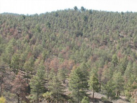

- Competencias a evaluar
- Capacidad de análisis y síntesis
- Capacidad de extraer e interpretar de manera sistemática y rigurosa los principios y elementos básicos para el establecimiento de unas conclusiones fundamentadas en los planteamientos teóricos y empíricos.
- ¿Cuánto crees que ha mejorado tu capacidad de síntesis y análisis?
- ¿En qué medida crees que ha mejorado tu capacidad para identificar la información necesaria para hacer un trabajo relacionado con la ecología?
- ¿Cuánto crees que ha mejorado tu capacidad de resumir adecuadamente la información analizada?
- ¿Cuál crees que ha sido el efecto de la asignatura en tu capaciad de fundamentar tus conclusiones en evidencias científicas?
- Según tu experiencia, asigna a las siguientes actividades de la asignatura un grado de contribución al entrenamiento de tu competencia de análisis y síntesis.
- Enumera los materiales que has leído o estudiado durante el curso que más han contribuido a entrenar esta competencia.
- Describe brevemente las principales dificultades que te has encontrado al entrenar esta competencia. Puedes indicar también, si quieres, la forma en la que has resuelto las dificultades que mencionas.
- Capacidad para el uso adecuado de las tecnologías de la información y la comunicación.
- Competencia que se refiere a la soltura en el manejo de herramientas digitales para manejar información ecológica. Por ejemplo, SIG, lenguajes de programación, análisis estadísticos, buscadores web, etc.
- ¿En qué medida crees que esta asignatura ha contribuido a mejorar tu capacidad de usar herramientas informáticas?
- ¿Cuánto crees que ha aumentado tu confianza en el uso de ordenadores?
- ¿Con qué probabilidad crees que en el futuro te formarás en esta competencia?
- Según tu experiencia, asigna a las siguientes actividades de la asignatura un grado de contribución al entrenamiento de tu competencia e uso de tecnologías de información y comunicación.
- Enumera los materiales que has leído o estudiado durante el curso que más han contribuido a entrenar esta competencia.
- Describe brevemente las principales dificultades que te has encontrado al entrenar esta competencia. Puedes indicar también, si quieres, la forma en la que has resuelto las dificultades que mencionas.
- Capacidad de expresión escrita
- Competencia que se refiere a la capacidad de expresar mediante escritura ideas complejas, reflexiones o argumentaciones basadas en evidencias o en percepciones propias de manera que sean inteligibles para otras personas. También se contempla la capacidad de distinguir la opinión propia de los hechos y de las evidencias.
- ¿En qué medida crees que esta asignatura ha entrenado tu capacidad de expresión escrita?
- Cuando tienes que escribir un texto, ¿en qué medida estructuras el mensaje que quieres transmitir antes de hacerlo?
- ¿En qué medida crees que tus textos están más estructurados después de cursar esta asignatura?
- Según tu experiencia, asigna a las siguientes actividades de la asignatura un grado de contribución al entrenamiento de tu capacidad de expresión escrita.
- Enumera los materiales que has leído o estudiado durante el curso que más han contribuido a entrenar esta competencia.
- Describe brevemente las principales dificultades que te has encontrado al entrenar esta competencia. Puedes indicar también, si quieres, la forma en la que has resuelto las dificultades que mencionas.
- Capacidad de interpretar la estructura y dinámica de las poblaciones, comunidades y ecosistemas
- Esta competencia se refiere a la capacidad de describir a los elementos anteriores usando atributos específicos ajustados a las teorías ecológicas vigentes. O sea, a la utilización de descriptores específicos para caracterizar poblaciones, comunidades y ecosistemas. También se incluye aquí la capacidad de distinguir entre elementos estructurales y funcionales en los sistemas naturales.
- Por favor, cuantifica cómo ha mejorado en esta asignatura tu comprensión de los elementos jerárquicos que usamos para describir la vida en la Tierra.
- ¿En qué medida crees que serías capaz de enumerar ahora mismo (y sin material de apoyo) 3 variables descriptoras de poblaciones, comunidades y ecosistemas?
- Según tu experiencia, asigna a las siguientes actividades de la asignatura un grado de contribución al entrenamiento de tu capacidad para interpretar la estructura y funcionamiento de poblaciones, comunidades y ecosistemas.
- Enumera los materiales que has leído o estudiado durante el curso que más han contribuido a entrenar esta competencia.
- Describe brevemente las principales dificultades que te has encontrado al entrenar esta competencia. Puedes indicar también, si quieres, la forma en la que has resuelto las dificultades que mencionas.
- Ser capaz de identificar las distintas variables que influyen en la estructura y funcionamiento de los ecosistemas.
- Esta competencia se refiere a la capacidad de interpretar el mundo real con la mirada de la ecología. Es decir, es la capacidad de conocer o inferir las variables biofísicas que determinan la estructura y funcionamiento de un ecosistema determinado. También se refiere a la capacidad de establecer relaciones entre el medio abiótico y las comunidades y poblaciones ecológicas.
- ¿Cuánto crees que ha mejorado tu capacidad de "leer el mundo con las gafas de la ecología" después de cursar esta asignatura?
- Observa esta foto. ¿En qué medida te sientes capaz de describir lo que ves usando conceptos propios de la ecología?
- 
- Según tu experiencia, asigna a las siguientes actividades de la asignatura un grado de contribución al entrenamiento de tu capacidad para interpretar el mundo real a la luz de la ecología.
- Enumera los materiales que has leído o estudiado durante el curso que más han contribuido a entrenar esta competencia.
- Describe brevemente las principales dificultades que te has encontrado al entrenar esta competencia. Puedes indicar también, si quieres, la forma en la que has resuelto las dificultades que mencionas.
- Capacidad de entender las cuestiones de escala que afectan al espacio y al tiempo en la descripción de procesos ecológicos.
- Esta competencia tiene que ver con las componentes espacial y temporal de la realidad y con la forma en la que la ecología las considera. La incorporación de la componente espacial se refiere a la capacidad de entender que los sistemas ecológicos pueden describirse de manera diferente conforme cambiamos la escala en el espacio. Igualmente, la escala temporal se refiere a conocer cómo afecta el devenir del tiempo a la estructura y funcionamiento de los sistemas ecológicos.
- ¿Cómo de capaz te ves de relacionar procesos que ocurren a una escala espacial pequeña (ej. la absorción de un fotón por una planta) con otros que ocurren a escala planetaria (ej. concentración de CO2 en la atmósfera)?
- ¿Cómo de bien crees que entiendes la siguiente afirmación?: "Para comprender el funcionamiento de un sistema ecológico en el presente hemos de integrar y trascender su funcionamiento a escalas espaciales y temporales inferiores a la escala de observación.
- ¿Cómo de bien crees que entiendes la siguiente afirmación?: "La resiliencia es una propiedad emergente de los ecosistemas"
- Según tu experiencia, asigna a las siguientes actividades de la asignatura un grado de contribución al entrenamiento de tu capacidad para entender las escalas espaciales y temporales.
- Enumera los materiales que has leído o estudiado durante el curso que más han contribuido a entrenar esta competencia.
- Describe brevemente las principales dificultades que te has encontrado al entrenar esta competencia. Puedes indicar también, si quieres, la forma en la que has resuelto las dificultades que mencionas.
- Ser capaz de establecer paralelismos entre teorías ecológicas y aspectos aplicados de las mismas
- Esta competencia incide en una capacidad muy importante de la inteligencia: la transferencia. Se refiere a la posibilidad de transferir el conocimiento adquirido en una situación concreta a otra ligeramente diferente. Además incorpora el hecho de que la situación "receptora" del conocimiento implica el abordaje de un problema socioambiental concreto.
- Según la definición anterior, si yo digo: "caza" ¿podrías identificar la teoría ecológica que "sobra" de la lista de abajo?
- Demografía.
- Depredación.
- Competencia intraespecífica.
- Sucesión ecológica.
- Según tu experiencia, asigna a las siguientes actividades de la asignatura un grado de contribución al entrenamiento de tu capacidad para transferir desde la teoría a la práctica.
- Enumera los materiales que has leído o estudiado durante el curso que más han contribuido a entrenar esta competencia.
- Describe brevemente las principales dificultades que te has encontrado al entrenar esta competencia. Puedes indicar también, si quieres, la forma en la que has resuelto las dificultades que mencionas.
- Constatación de que las teorías ecológicas son marcos conceptuales que nos sirven de guía para entender el mundo
- Esta competencia se refiere a la capacidad de abstracción del estudiante. Una teoría científica no es más que una versión simplificada de la realidad que nos ayuda a entender a esta última. Las teorías ecológicas y su descripción matemática son útiles porque nos ayudan a entender mejor el mundo. El pensamiento abstracto requiere comprender que en el proceso de simplificación de la realidad se "eliminan" variables que están presentes en el mundo real.
- Según tu experiencia, asigna a las siguientes actividades de la asignatura un grado de contribución al entrenamiento de tu capacidad para interpretar el mundo real a la luz de la ecología.
- Enumera los materiales que has leído o estudiado durante el curso que más han contribuido a entrenar esta competencia.
- Describe brevemente las principales dificultades que te has encontrado al entrenar esta competencia. Puedes indicar también, si quieres, la forma en la que has resuelto las dificultades que mencionas.